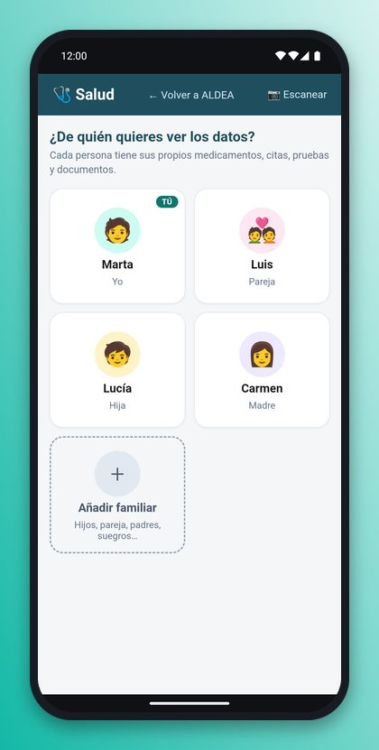
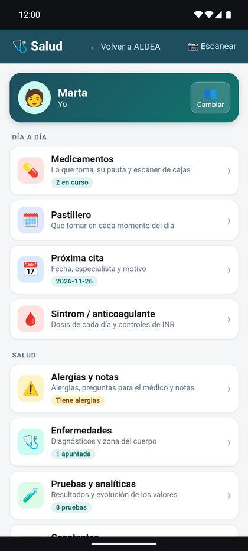
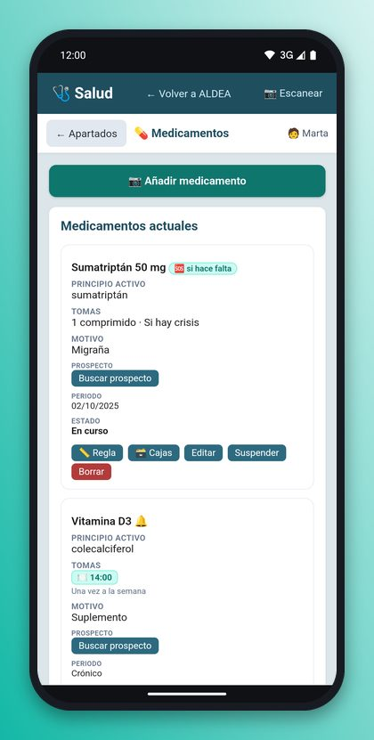
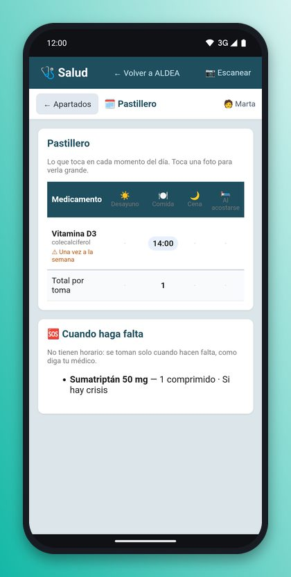
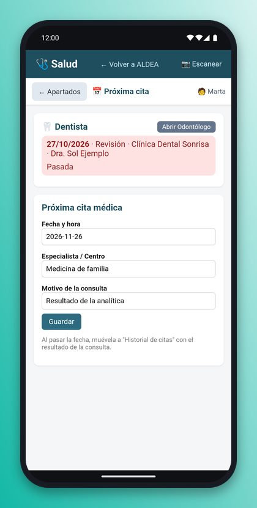
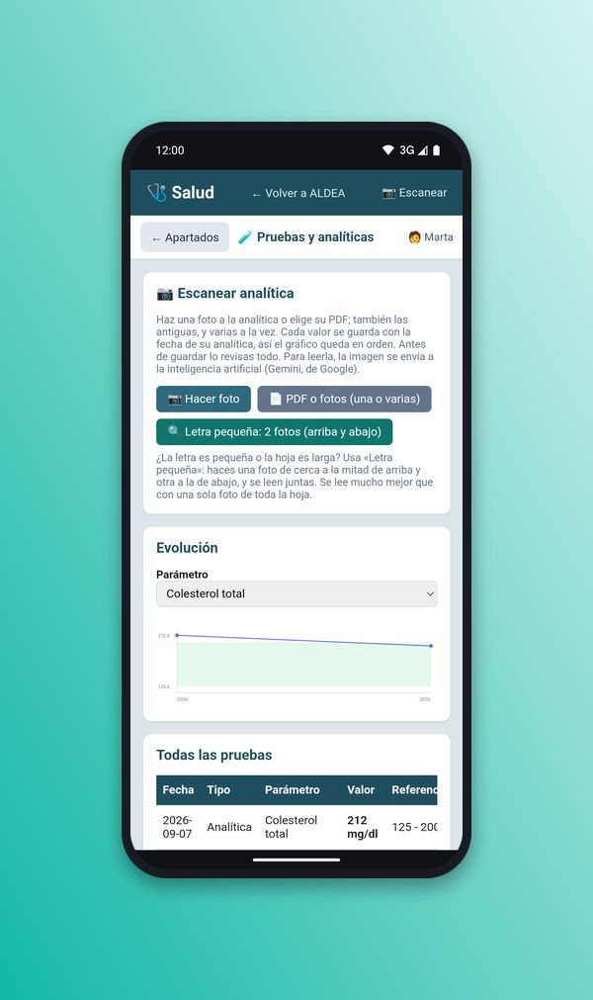
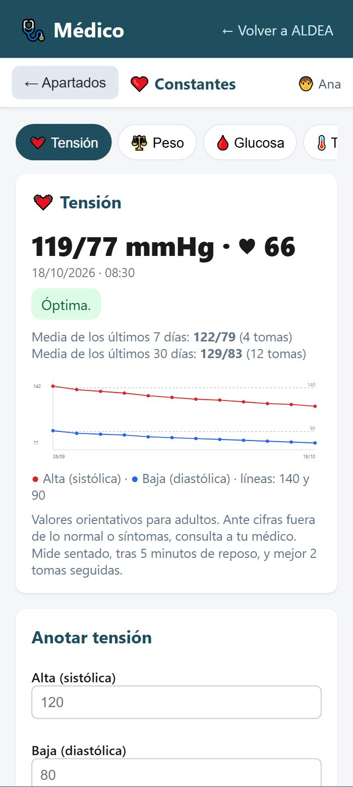
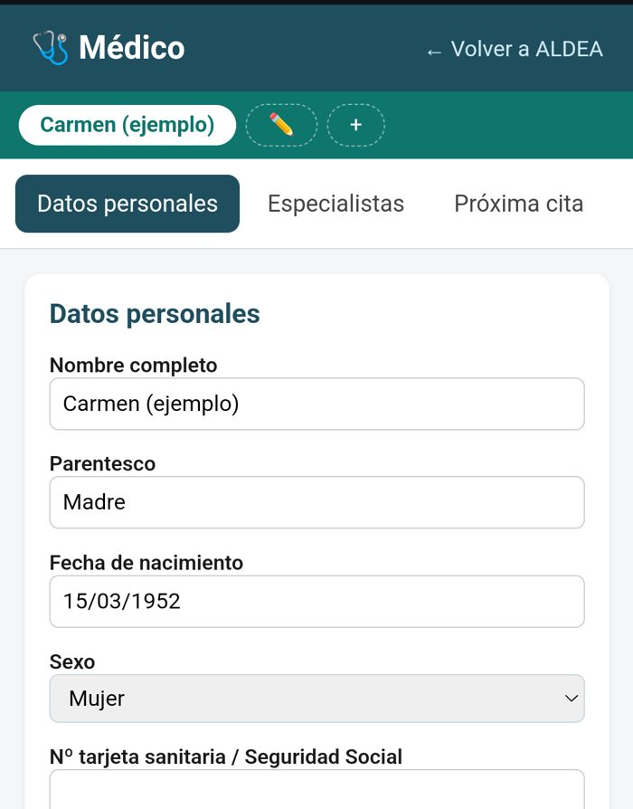
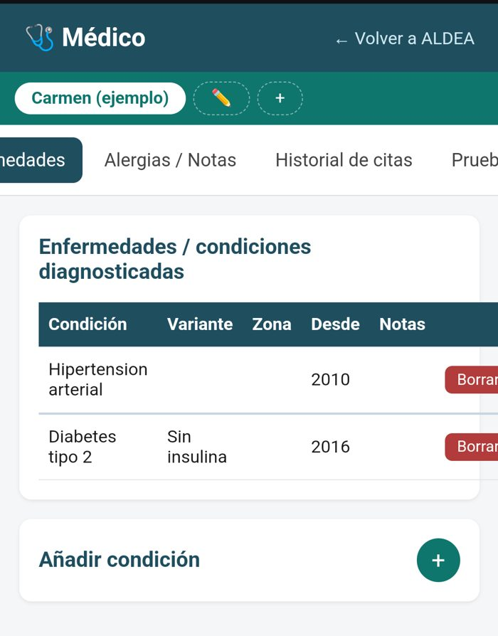

🎬 Míralo en vídeo
Menos de un minuto, con voz. Los datos que salen son de ejemplo.
📱 Así se ve






Capturas con datos de ejemplo. Toca una para verla en grande; pasan solas (se paran mientras la miras).
Personas. Al entrar eliges de quién son los datos: tú y tus familiares, cada uno con su tarjeta y sus propios datos. ➕ Añadir familiar da de alta a otra persona. Para eliminar a una persona: su tarjeta › Datos personales › Eliminar persona (borra todos sus datos y no se puede deshacer).
Apartados. Cada persona tiene sus apartados en tarjetas, agrupados en Día a día, Salud e Historial y datos, con un resumen (medicamentos en curso, próxima cita, última tensión…). Con ⚙️ Elegir qué apartados se muestran ocultas los que esa persona no necesita; no se borra nada.
| Apartado | Qué registras |
|---|---|
| 💊 Medicamentos | Qué toma, dosis y horario. Se rellena desde el registro oficial CIMA con el Código Nacional (6 cifras de la caja) o el nombre; con la IA, escaneando la caja. Opcional: aviso de caducidad y de fin de la caja. |
| 🗓️ Pastillero | Qué tomar en cada momento del día (desayuno, comida, cena y noche). |
| 📅 Próxima cita / 📋 Historial de citas | Fecha, especialista, motivo y resultado. |
| ⚠️ Alergias / Notas | Alergias, intolerancias, cirugías y preguntas para el médico. |
| 🩺 Enfermedades | Diagnósticos, con su variante o tipo y la zona del cuerpo. |
| 🧪 Pruebas y analíticas | Resultados con su rango de referencia y gráfica de evolución; escaneo de analíticas. |
| ❤️ Constantes | Tensión con pulso, peso con IMC, glucosa, temperatura y oxígeno. |
| 👩⚕️ Especialistas · 📁 Documentos · 📇 Datos personales | Médicos habituales; informes y recetas (PDF o foto); tarjeta sanitaria, contacto, peso, talla y función del riñón y del hígado. |
Medicamentos y la caja
- En Medicamentos, 📷 Añadir medicamento abre el formulario con la cámara a la vista.
- 📅 Avisarme antes de que caduque: útil para lo que guardas por si acaso. 📦 Avisarme cuando se vaya a acabar la caja: con las unidades y la pauta calcula cuándo se termina y avisa una semana antes. Al empezar otra caja, 🔄 Caja nueva.
- 📄 ver prospecto abre el prospecto completo, tal cual: información oficial de la AEMPS (CIMA).
ALDEA organiza tus medicamentos y recordatorios. No valora tratamientos. Consulta siempre a tu médico o farmacéutico.
Constantes: tensión, peso, glucosa, temperatura y oxígeno
- Elige arriba el tipo (Tensión, Peso, Glucosa, Temperatura, Oxígeno), escribe el valor, la fecha y la hora, y toca Guardar.
- Verás la última medida, la gráfica y, en la tensión, la media de 7 y de 30 días, que es lo que suele pedir el médico.
- Si en Diabetes elegiste mmol/l, la glucosa se anota y se muestra en esa unidad; ALDEA no convierte valores.
- El peso de Datos personales se actualiza solo con la última medida; con la talla se calcula el IMC (en menores de 18 años no se valora: se hace con las tablas del pediatra).
- 🖨️ Imprimir para el médico genera la tabla del historial. Toma la tensión sentado, tras 5 minutos de reposo.
Pruebas y analíticas: escanear una analítica
- En 🧪 Pruebas y analíticas, toca 📷 Hacer foto o 📄 PDF o fotos (una o varias). Sirven también las analíticas antiguas, y puedes elegir varias a la vez.
- La inteligencia artificial lee los valores. Cada uno se guarda con la fecha de su analítica (la de la extracción), no la de hoy; si el informe trae resultados anteriores, cada uno con la suya.
- Revisa la tabla antes de guardar: corrige lo que haga falta y desmarca lo que no quieras. Lo que ya tenías guardado viene desmarcado, para no duplicarlo.
- Toca Guardar. La foto o el PDF queda en Documentos y la gráfica de evolución se actualiza, con cada analítica a su distancia real en el tiempo.



Para escanear analíticas hace falta la inteligencia artificial. La imagen se envía a la empresa de IA que hayas elegido (Google, por defecto) para leerla; si el informe lleva tu nombre u otros datos personales, puedes taparlos o recortar la foto antes. Sin IA, los valores se apuntan a mano en Añadir prueba.
Ciclo (opcional)
Para mujeres de 8 a 60 años, un apartado discreto de seguimiento del ciclo menstrual (la regla). Sale en el menú de la persona como 🌸 Ciclo y no guarda nada hasta que se activa. Hace falta que en Datos personales estén el sexo y la fecha de nacimiento (basta el año). Son datos de salud sensibles y se guardan solo en el móvil; con el 🔒 Bloqueo de ALDEA (capítulo 11.2) nadie más puede verlos.
Diabetes (opcional)
Un cuaderno para el día a día de quien vive con diabetes: recordar lo que pasó (comidas, valores, suministros) y llevarlo a la consulta. La app no dice qué comer; ayuda a recordar lo que pasó cuando se comió.
ALDEA te ayuda a recordar y organizar. No valora tratamientos ni indica dosis. Consulta siempre a tu equipo sanitario.
- Activarla: en Datos personales de cada persona, 📒 Diabetes › Activar (lee el aviso y acéptalo). Solo sale en el menú de quien la activa. Se puede desactivar conservando los datos o borrarlos todos.
- Comidas: escribe el plato (y si quieres una foto y la hora). En Añadir detalles: cómo fue (Me sentó mal, No fue como esperaba, Preferencia personal), ⭐ favorita, glucosa antes y después, contexto (ejercicio, enfermedad, estrés, horario, medicación), ingredientes y nota. Al volver a escribir un plato salen sus anotaciones anteriores: cada vez puede ser distinta. «🔔 Recordármelo» te lo recuerda al elegirlo otra vez.
- No tener en cuenta quita una comida de las referencias sin borrarla; Borrar la elimina de verdad.
- Glucosa: anota el valor tal como lo ves en tu aparato (mg/dl o mmol/l), el momento y una nota. La lista y la gráfica lo muestran tal cual: sin colores, sin rangos y sin unir los días en los que no hay registro. Lo que anotas aquí también sale en Constantes, y al revés.
- Suministros: tiras, lancetas, sensores, agujas, insulina… con su cantidad (marca Es una estimación si no la has contado: sale con «≈»), caducidad y un aviso cuando quede poco. Con −1 y ＋ Añadir llevas la cuenta; 🛒 Lista de la compra la prepara para compartirla. Los avisos salen también en el menú de Salud.
- Consulta: lo que marcas con «❓ Preguntar en la consulta» y tus preguntas sueltas, que puedes enlazar con una próxima cita. 📄 Hoja para la consulta junta preguntas, comidas marcadas y valores de 7, 14, 30 o 90 días en tablas, para imprimirla o guardarla en PDF.
- Lo que NO hace: no da consejos médicos, no calcula hidratos ni dosis, no dice si un valor está bien o mal, no marca alimentos como buenos o malos y no busca relaciones entre lo que comes y tu glucosa. Si no hay registro, dice «sin registro»: nunca rellena.
- Todo se queda en el móvil. De Diabetes no sale ningún dato, ni siquiera cuántos registros tienes, salvo lo que tú compartas o imprimas (solo cuenta, sin separar, en lo que ocupa el archivo de Salud).


